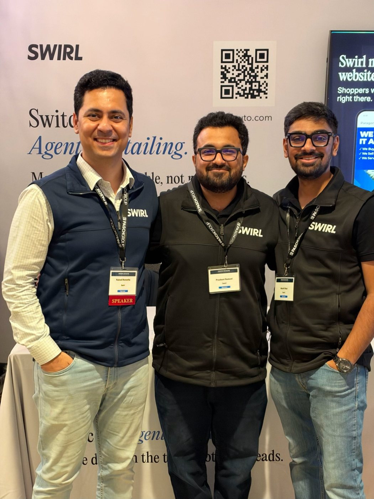

I spent three days last week at the Modern Retailing Conference in Palm Beach. Almost every session had AI in the title. The ones worth remembering were about something simpler: what it is actually like to buy a car from a dealership in 2026, and why so much of it is still harder than it needs to be.

The phone number comes first
Brian Pasch, who runs the conference, moderated a panel on the future of the dealership website with Brian Benstock of Paragon Honda and people from JD Power, Auto Genius and Protomiq. He opened it with a warning.
The topic was one every car buyer has run into. Most dealer websites will not answer a question until the shopper hands over a phone number. My colleague Kaizad Hansotia came to automotive after a decade in e-commerce, and described seeing that for the first time: "It was a shock for me, because any information I need to know, a website has to have my phone number before that."
Pasch explained what that does to the relationship before it has started: "Many of the CTA buttons say, 'Give me information now,' because I don't trust you."
That is the experience from the buyer's side. They arrive with a question about a price or a payment, and the first thing the website does is ask them for something.
One buyer, three leads
The second problem is what happens after the shopper does engage. They value their trade in one tool, apply for credit in another and ask a question in a chat window. The dealership receives three separate leads and often treats them as three people. Pasch asked the room a question I have not stopped thinking about: "What if it just became one conversation, not three leads?"
Cox Automotive has measured what this feels like for the customer, and where the time goes once they reach the store.
Put the first two lines together. Nearly every shopper expects the store to know what they already did online, and nearly every dealer admits the customer has to do it again. Then they wait. The steps buyers said took longer than expected were signing paperwork and waiting on a finance approval, and the improvement they asked for most was a shorter wait.
None of that is a technology complaint. It is a customer telling you their time was wasted.
Where people still matter
One panel had a title that could have been the theme of the whole event: Balancing AI Efficiency with Meaningful Customer Interactions. The organisers summed it up in a sentence I agree with: "AI can move fast, but trust is still earned through the right human moments."
I think that is the right way to divide the work. The parts of buying a car that customers resent are the repetitive ones: retyping details, waiting for a number, being asked the same question by a second person. Those can be handled by software, at any hour, without making anyone feel processed. The parts they value are the ones where someone knowledgeable helps them feel sure about a large decision. Speed belongs to the first group and people belong to the second.
The dealers in the room seemed to understand this better than some of the vendors. The conference ran a contest for AI tools built by dealership staff themselves, with vendors excluded and a $5,000 prize decided by a live vote. Most of what gets built that way is aimed at the dull internal work that keeps employees away from customers.
Why it matters now
Buyers have somewhere else to go. Online-only sellers have spent years making the purchase simple, and local dealers are measured against that whether they like it or not. Kaizad made the case for the dealer on stage: "If we make it easy for a consumer to shop a car from a local dealer, whether they want to buy it online or from the store, then I think that is what will arm them with the right ammunition to fight against the Carvanas of the world."
A local dealer has things an online seller cannot copy: the car on the lot, a service department, a person to talk to. What they often lack is an experience that respects the buyer's time before the visit.
Pasch gave dealers a question to take home: "What can I do to have a more modern experience?" After three days in Palm Beach, my answer is short. Answer the question before you ask for the phone number, remember what the customer already told you, and stop making them wait.